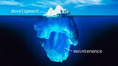

About gardens and icebergs
How to make sure that the iceberg does not hit the garden
Roland Tritsch
Created: 2022-10-22 Sat 06:27
Software Engineering
- Samuel Beckett Bridge
- This is Software Engineering! Right?
- Plan it, Build it, Use it!!!

Software Engineering
- Samuel Beckett Bridge
- This is Software Engineering! Right?
- Plan it, Build it, Use it!!!

Software Gardening
- Develop and idea how the garden needs to look like …
- Put a couple of seeds into the ground (the right kind of seeds in the right place) …
- … and then work very hard to make it grow (lot's of water and fertilizer)!
Software Gardening
- Develop and idea how the garden needs to look like …
- Put a couple of seeds into the ground (the right kind of seeds in the right place) …
- … and then work very hard to make it grow (lot's of water and fertilizer)!

Software Gardening
- Develop and idea how the garden needs to look like …
- Put a couple of seeds into the ground (the right kind of seeds in the right place) …
- … and then work very hard to make it grow (lot's of water and fertilizer)!

Software Gardening
- What you really want is this: Powerscourt Garden
- Nice Architecture. Well implemented. Well maintained.

Software Gardening
- What you really want is this: Powerscourt Garden
- Nice Architecture. Well implemented. Well maintained.

Software Gardening
- What you really want is this: Powerscourt Garden
- Nice Architecture. Well implemented. Well maintained.
- How do we get this? How do we get there?
The Iceberg
By getting really good at managing the Iceberg!
- Developing awareness & Managing expectations
- PS: That's just one of the things that you need to do to make Software Gardening work
What's the Iceberg?
- Initially you have 10 developers and 8 of them work on features!
- Some time later you have 100 developers and 25 work on features!
- 10 times more people. 3 times more features. WTF!!!
What's the Iceberg?
- 80% of the work is under water!!!
- Moving from building a solution to owning a solution
- Owning code is expensive!
- Moving from 10 people to 100 people is expensive!
- Hiring, on-boarding, churn (100%), …, communication, …
- Moving from 100 customers to 5000 customers is expensive!
- Higher expectations wrt. uptime, processes, professionalism, …
